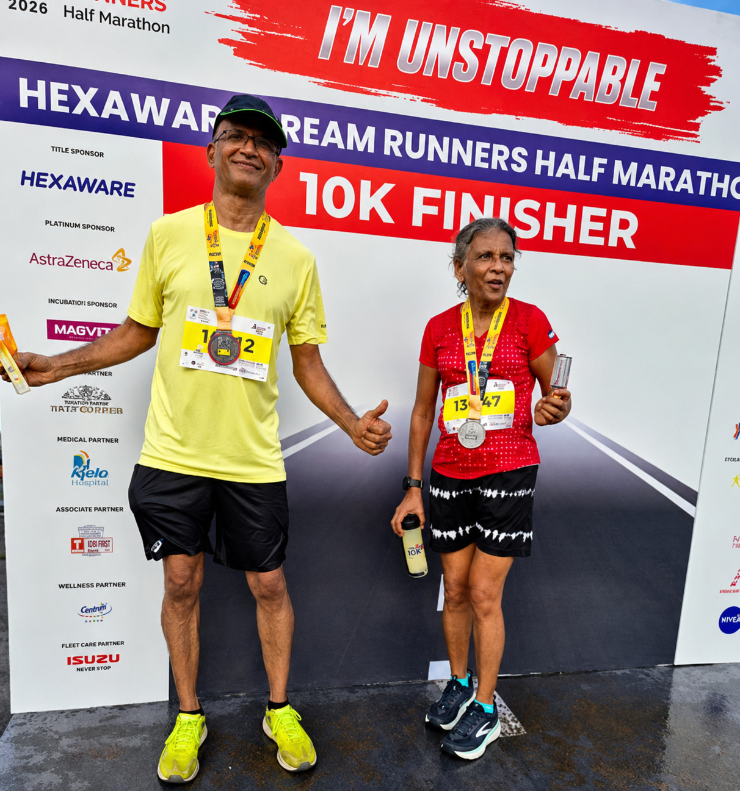

TTPA warmly congratulates Dr. Asha Rajini and Dr. R. Sridhar on successfully completing the 10K event at the Hexaware Dream Runners Half Marathon 2026.
Joining a large gathering of enthusiastic runners, the duo demonstrated admirable fitness, determination and enthusiasm, reminding us that an active lifestyle can remain a rewarding pursuit through the years.

Their achievement is particularly inspiring to our pensioner community, encouraging everyone to incorporate physical activity appropriate to their individual capabilities.
Dr. Asha Rajini continues to set an impressive pace, while Dr. R. Sridhar deserves equal appreciation for taking up the challenge and successfully completing the 10K.
TTPA congratulates both athletes and cheerfully encourages Dr. Sridhar to keep training—perhaps it is now time to catch up with Dr. Asha!